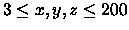
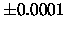

| Jackpot |
An addicted gambler walks from his home to the casino every day to try his luck.
He likes most games but the one he likes most is the slot machine, also known as the jackpot or the one-armed-bandit. Because of his years of experience he exactly knows which, and how many, symbols appear on the wheels of every slot machine.
Unfortunately all wheels have changed since last time he was in the casino.
The wheels are completely new, vary in size and are much larger than the
former ones. He wonders if there's a way to find out which slot machine would
give him the most profit. He suspects that a lot of calculations are
involved so he decides that this job can better be done by a computer.
Can you build a program for this man which calculates the pay-rate of a
number of machines, if the complete wheels are known? There are three wheels
on each machine, all three wheels rotate independently of each other. Each
line of three times the same symbol pays an amount of money.
The display of the machine consists of three visible rows. The middle row pays
10 coins if three identical symbols are shown, both the upper and the lower
row pay 5 coins. In addition, the line from the upper left corner to the lower
right as well as the line from the lower left to the upper right corner can
result in a winning combination. They both pay 7 coins. The pay-rate is
defined as the average (or expected) amount of money paid by the machine on
each play.
a line with the numbers x, y, z, each separated by at least one space (
).
x is the number of symbols on the first wheel, y the number of symbols on the second wheel and z the number of symbols on the last wheel.
3 lines with the symbols on each wheel. A symbol is represented by one capital character. The first line contains the symbols of the first wheel, the second line contains the symbols of the second wheel and the third line contains the symbols of
the third wheel.
Note: a variance of

is allowed in the output due to rounding differences.
2 3 4 6 AAB BABA BBAAAB 12 15 18 CCCCCCCCCCCC CCCCCCCCCCCCCCC CCCCCCCCCCCCCCCCCC
8.5000 34.0000